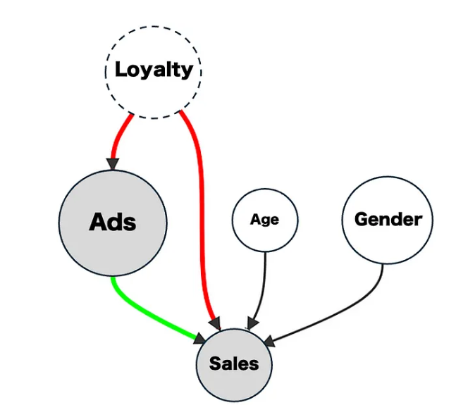
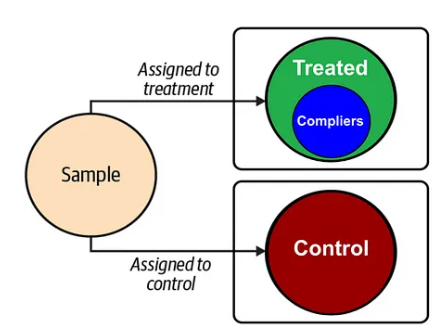
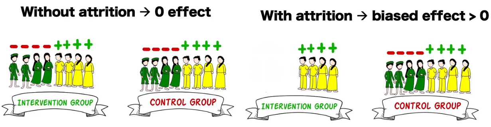

PurchAmtControl PurchAmtTreat
1 67.69140 69.56774
2 67.99712 68.11964
3 72.29899 66.52111
4 66.56241 65.18317
5 62.65666 70.31652
6 69.09437 70.65051The Goldstandard to Assess Treatment Effects in Marketing or Medicine
How the logic of Treatment and Control leads to A/B Testing
Requirements for a successful A/B test
Possible violations of the requirements and the consequences
What one can do when it is not possible to fulfill the requirements
A very powerful and easy to use methodology to compare means of one or more Treatment groups to a Control Group.
Goal: Determine if a treatment (e.g., number of conversions for a new websites (Treatment)) is significant compared to the old website (Control Group).
Methodology: Two Sample t-Test
Requirement: Participants must be randomly assigned to the groups (no self-selection!).
Problem: While it is easy and technically straightforward to randomly assign website visitors to different webpages, it can be difficult or impossible in other cases.
For example, it is not feasible to assign participants of a marketing event into a treatment group (drank a glass of champagne before the talk) and a control group (did not drink a glass of champagne before the talk)
Problem: We cannot observe counterfactuals
If Treatment and Control group subjects are chosen entirely at random and if we have a large number of subjects, we can assume that any characteristics of subjects that influence the outcome is equally present in Treatment and Control group
New website is Treatment old website is Control group
Purchase value data from the last 100 visitors who purchased on each of the websites:
PurchAmtControl PurchAmtTreat
1 67.69140 69.56774
2 67.99712 68.11964
3 72.29899 66.52111
4 66.56241 65.18317
5 62.65666 70.31652
6 69.09437 70.65051Control Group:
Mean of Control Group is: 66.81195Standard Error of Control Group is: 0.3173274Treatment Group:
Mean of Treatment Group is: 68.96123Standard Error of Treatment Group is: 0.2768926Assumption: Same Variance
Distribution: Normal
Method:
Calculate difference between means
Difference between means will also be normal distributed
Standard error needs to be recalculated for difference and is approximately double the one of the treatment/control group.
Hypothesis 0: Difference is 0
Goal: If Treatment website is better, a difference of 0 should be very unlikely. (we reject the Null Hypothesis as being too unlikely)
Here are the first six observations of the data again:
PurchAmtControl PurchAmtTreat
1 67.69140 69.56774
2 67.99712 68.11964
3 72.29899 66.52111
4 66.56241 65.18317
5 62.65666 70.31652
6 69.09437 70.65051
Two Sample t-test
data: DataWebSites$PurchAmtControl and DataWebSites$PurchAmtTreat
t = -5.1034, df = 198, p-value = 7.797e-07
alternative hypothesis: true difference in means is not equal to 0
95 percent confidence interval:
-2.979797 -1.318772
sample estimates:
mean of x mean of y
66.81195 68.96123 Omitting a variable that affects both the Treatment and the Outcome.
Imperfect compliance occurs when not all participants of an experiment adhere to their assigned treatment.
When participants in the Control and Treatment groups leave but the dropout is not balanced (e.g.,unhappy customers leave):
If biases exist we have to use techniques that can control for these biases, e.g., Linear Regression